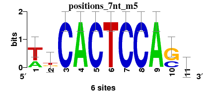

| Motif | Logo | 3 Top hits in databases |
|---|---|---|
| oligos_6nt_mkv3 | versus regulonDB: no matchversus footprintDB: 2470_MA0080.1_JASPAR_CORE_2009_, 5987_1awc_A_3D-footprint_20130124_, 108_MA0062.1_JASPAR_CORE_2009_, | |
| positions_6nt_m1 | versus regulonDB: no matchversus footprintDB: 6733_4euw_A_3D-footprint_20130124_, 1939_PB0082.1_JASPAR_CORE_2009_, 3755_UP00058_UniPROBE_20120919_, | |
| positions_6nt_m2 | versus regulonDB: HipB, versus footprintDB: 2623_MA0396.1_JASPAR_CORE_2009_, 3076_HipB_RegulonDB_7.5_, 2588_MA0342.1_JASPAR_CORE_2009_, | |
| positions_7nt_m1 | versus regulonDB: no matchversus footprintDB: 2588_MA0342.1_JASPAR_CORE_2009_, 2615_MA0381.1_JASPAR_CORE_2009_, 2604_MA0366.1_JASPAR_CORE_2009_, | |
| positions_7nt_m2 | versus regulonDB: no matchversus footprintDB: 2613_MA0379.1_JASPAR_CORE_2009_, 6327_1tgh_A_3D-footprint_20130124_, 6272_1qn7_A_3D-footprint_20130124_, | |
| positions_7nt_m3 | versus regulonDB: no matchversus footprintDB: 5875_TFAP2B_DBD_2_HumanTF_1.0_, 5902_Tcfap2a_DBD_2_HumanTF_1.0_, 6491_2pe5_C_3D-footprint_20130124_, | |
| positions_7nt_m4 | versus regulonDB: no matchversus footprintDB: 2547_MA0285.1_JASPAR_CORE_2009_, 2733_PF0046.1_JASPAR_CORE_2009_, | |
| positions_7nt_m5 |  | versus regulonDB: no matchversus footprintDB: 2858_PF0171.1_JASPAR_CORE_2009_, 5958_1a0a_B_3D-footprint_20130124_, 5978_1am9_AB_3D-footprint_20130124_, |
| positions_8nt_m1 | versus regulonDB: no matchversus footprintDB: 2429_MA0035.1_JASPAR_CORE_2009_, 5095_SigD_2_DBTBS_1.0_, | |
| positions_8nt_m2 | versus regulonDB: no matchversus footprintDB: 7524_NFIA+NFIB+NFIC+NFIX_si_HOCOMOCO_v9_, 7282_WRKY45_ArabidopsisPBM_20140210_, | |
| positions_8nt_m3 | versus regulonDB: no matchversus footprintDB: 7458_HXD4_f1_HOCOMOCO_v9_, 6107_1hdd_C_3D-footprint_20130124_, 7341_DLX2_f1_HOCOMOCO_v9_, | |
| positions_8nt_m4 | versus regulonDB: no matchversus footprintDB: 2529_MA0163.1_JASPAR_CORE_2009_, 2448_MA0057.1_JASPAR_CORE_2009_, 7511_MZF1_f1_HOCOMOCO_v9_, | |
| positions_8nt_m5 | versus regulonDB: no matchversus footprintDB: 5241_ELF1_full_HumanTF_1.0_, 5801_SPDEF_DBD_1_HumanTF_1.0_, 2542_MA0280.1_JASPAR_CORE_2009_, | |
| dyads_m1 | versus regulonDB: no matchversus footprintDB: 4955_brk_DrosophilaTF_1.1_, 1772_MA0213.1_JASPAR_CORE_2009_, 6287_1qqa_A_3D-footprint_20130124_, | |
| dyads_m2 | versus regulonDB: no matchversus footprintDB: 4955_brk_DrosophilaTF_1.1_, 2843_PF0156.1_JASPAR_CORE_2009_, 2606_MA0368.1_JASPAR_CORE_2009_, | |
| dyads_m3 | versus regulonDB: no matchversus footprintDB: 1785_MA0227.1_JASPAR_CORE_2009_, 1810_MA0252.1_JASPAR_CORE_2009_, 7677_TGIF1_si_HOCOMOCO_v9_, | |
| dyads_m4 | versus regulonDB: no matchversus footprintDB: 1921_PB0060.1_JASPAR_CORE_2009_, 3697_UP00000_UniPROBE_20120919_, 2481_MA0092.1_JASPAR_CORE_2009_, | |
| dyads_m5 | versus regulonDB: no matchversus footprintDB: 2742_PF0055.1_JASPAR_CORE_2009_, 2533_MA0267.1_JASPAR_CORE_2009_, |